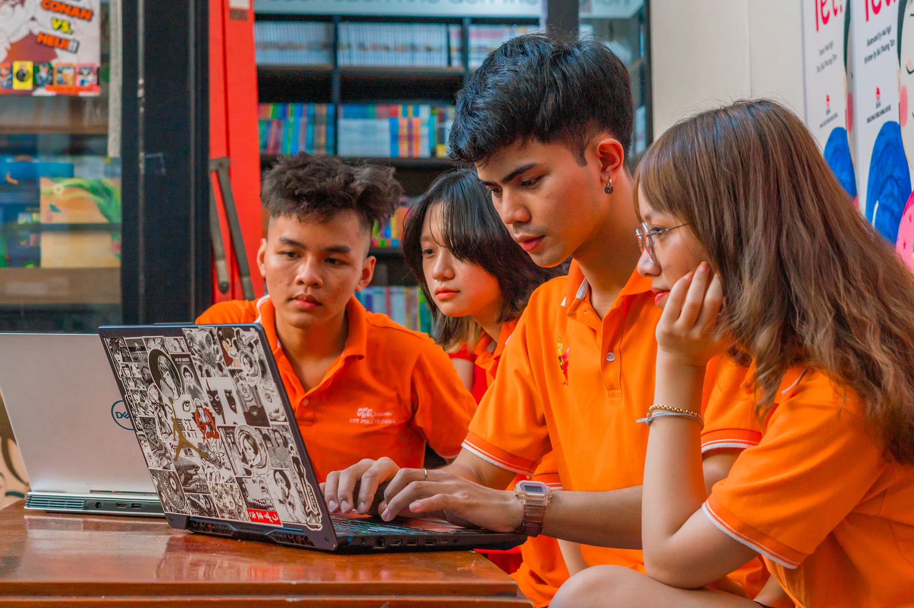

Phổ thông Cao đẳng - FPT Polytechnic là đơn vị trực thuộc Tổ chức Giáo dục FPT, triển khai chương trình đào tạo kết hợp giữa giáo dục phổ thông và giáo dục nghề nghiệp, dành cho học sinh sau khi tốt nghiệp Trung học Cơ sở (THCS). Chương trình này giúp học sinh vừa hoàn thành chương trình văn hóa phổ thông, vừa sớm tiếp cận và phát triển kỹ năng nghề nghiệp trong môi trường thực tiễn.
Hình ảnh sinh viên FPT